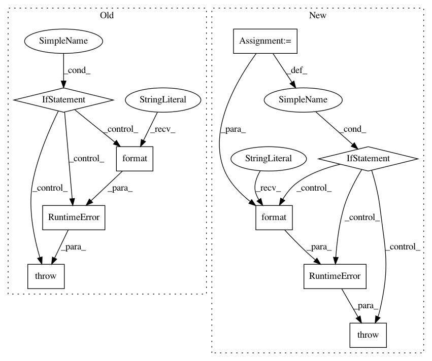

233020f67b2ae917763ecbedab1324390fe47cd1,misc/sos_magic.py,SoS_Magics,sosdict,#SoS_Magics#Any#,155
Before Change
// do not return __builtins__ beacuse it is too long...
actions = line.strip().split()
for action in actions:
if action not in ["reset", "all", "keys"]:
raise RuntimeError("Unrecognized sosdict option {}".format(action))
if "reset" in actions:
return self._reset()
if "keys" in actions:
if "all" in actions:
After Change
"Magic that displays content of the dictionary"
// do not return __builtins__ beacuse it is too long...
actions = line.strip().split()
keys = [x for x in actions if x not in ["reset", "all", "keys"]]
for x in keys:
if not x in env.sos_dict:
raise RuntimeError("Unrecognized sosdict option or variable name {}".format(x))
if "reset" in actions:
return self._reset()
if "keys" in actions:
if "all" in actions:
In pattern: SUPERPATTERN
Frequency: 3
Non-data size: 9
Instances
Project Name: vatlab/SoS
Commit Name: 233020f67b2ae917763ecbedab1324390fe47cd1
Time: 2016-10-25
Author: ben.bog@gmail.com
File Name: misc/sos_magic.py
Class Name: SoS_Magics
Method Name: sosdict
Project Name: cornellius-gp/gpytorch
Commit Name: 979b8c9efa551e8c948a4aca145367a2d87ac8d6
Time: 2019-02-26
Author: balandat@fb.com
File Name: gpytorch/distributions/multitask_multivariate_normal.py
Class Name: MultitaskMultivariateNormal
Method Name: rsample
Project Name: EpistasisLab/tpot
Commit Name: 990d954031a1121bc0b9ec1678c0b7db7cfaa374
Time: 2016-07-08
Author: supacoofoo@gmail.com
File Name: tpot/operators/base.py
Class Name: Operator
Method Name: parameter_types